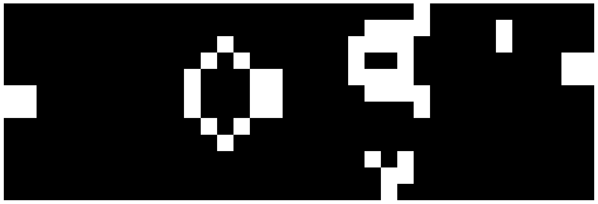
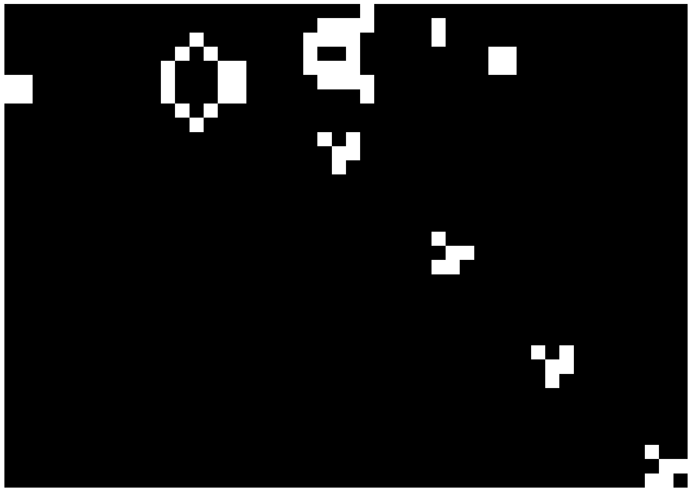
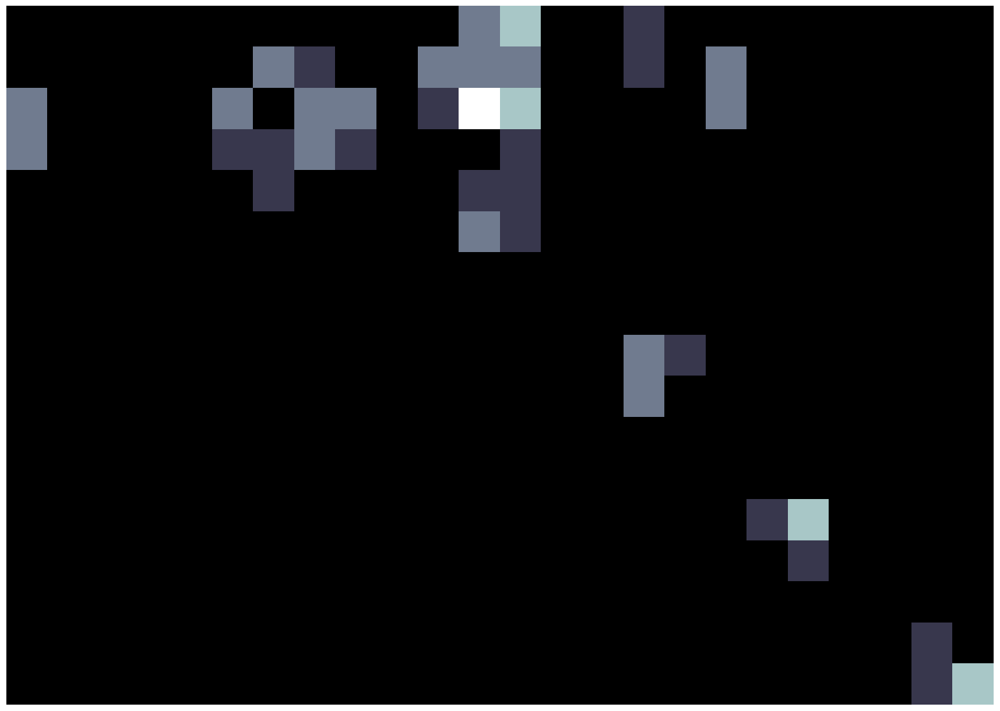
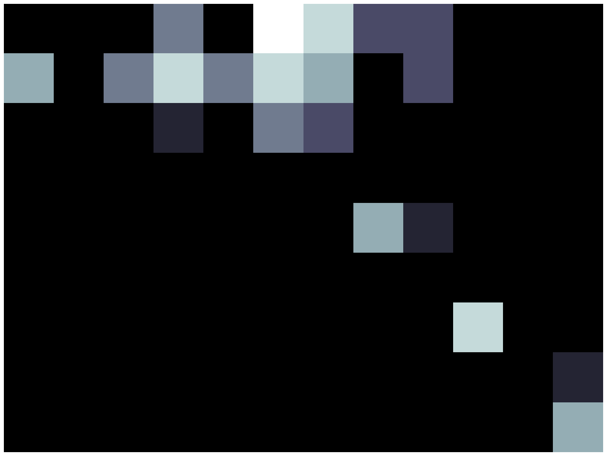
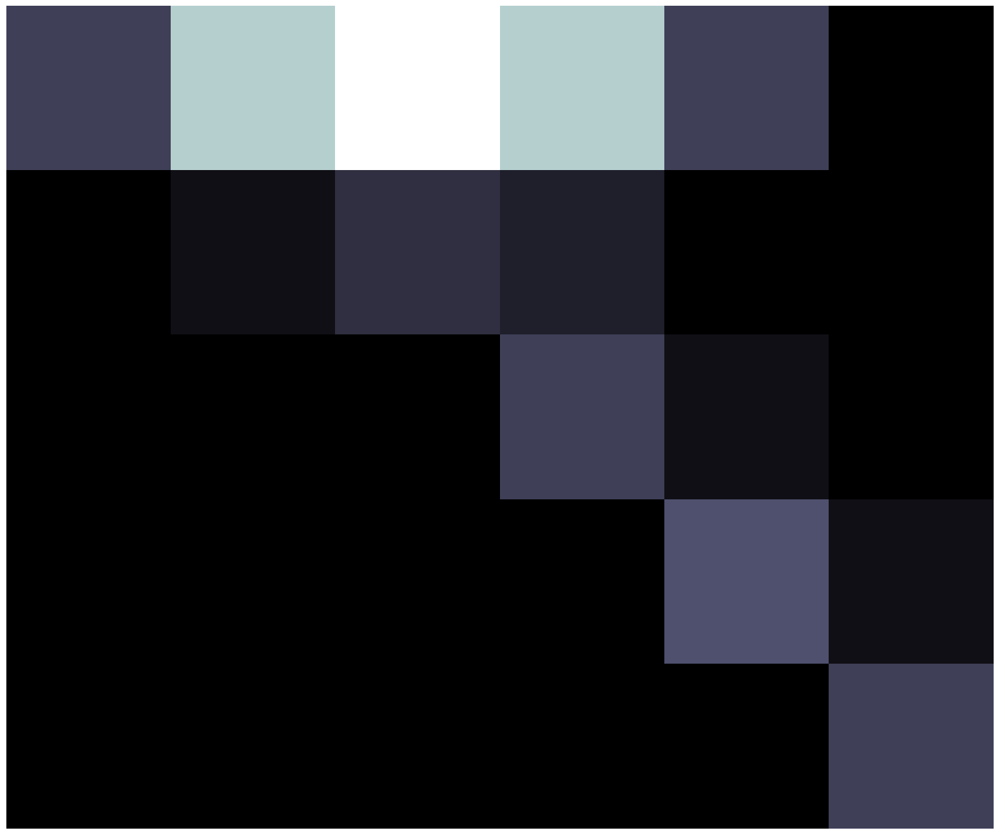

The Hashlife algorithm was invented by Bill Gosper in [Gosper1984] to speed up evaluation of the Game of Life for huge or very long running patterns using a memoized quadtree. It is a very ingenious algorithm and one that has some subtlety in implementation. There are several good explanations on the web, including Tomas Rokicki's Dr. Dobbs article and Jenny Owen's explanation. This post explains a simple Python implementation.
You can download the source for the implementation.
I'll assume you are familiar with the Game of Life.
There are a huge number of clever ways to implement Conway's Game of Life, including:
Ignoring the complexities of loading patterns and display output, the basic algorithm for the GoL can be very simple indeed. If we have a collection of “on” cells stored as (x,y) pairs, a tiny Python program to compute the next generation is:
from collections import Counter
def life(pts):
ns = Counter([(x+a, y+b) for x,y in pts for a in [-1,0,1] for b in [-1,0,1]])
return Counter([p for p in ns if ns[p]==3 or (ns[p]==4 and p in pts)])This implementation has no limits on universe size, other than memory limitations and only computes updates near live cells. It's not very fast, though!
The Game of Life is also easy to write as a convolution of a binary matrix, for example with SciPy:
from scipy.ndimage import convolve
k = np.array([1,1,1,1,2,1,1,1,1]).reshape(3,3)
def life(cells):
result = convolve(cells, k, mode="wrap")
return (result>4) & (result<8)This is a very simple form to parallelise, e.g. on the GPU, but requires storing a dense matrix and computing an update for every allocated cell (no skipping blank space).
Hashlife is designed to be able to run a cellular automaton quickly, by pre-caching successors to states have seen before. To make this efficient, we cache things in a quadtree using a hierarchy over both space and time. This allows Hashlife to, for example, compute the state of repetitive patterns trillions of generations in the future and easily store the result.
Hashlife is very fast for periodic patterns run for long stretches. It is not efficient for chaotic patterns (it will rapidly run out of memory and grind to a halt) and it is not very useful for interactive display, as displaying each generation is a huge overhead.
We operate on a quadtree, where each node has four children, each of which has four children, etc, until we reach leaf nodes:
Leaf nodes are individual cells, either on or off.
Each node has a level , where the size of the node is cells.
The Hashlife algorithm defines an recursive process that:
k node, size
k-1 node, size
Eventually, we end up processing blocks of size 4×4 (), where we can use basic brute-force, computing the 2×2 successor of a 4×4 cell by straightforward computation. The clever part is that by memoizing the recursion to cache the intermediate products, we can dramatically reduce computation requirements, as most CA patterns are very repetitive in space and in time.
Patterns are stored as a quadtree representing the state of the world at step . A quadtree node is a tuple node(k, a, b, c, d, n, hash), where
k is the level of the node
a, b, c, d are the children of this node (or None, if k=0).
n is the number of on cells in this node (useful for bookkeeping and display)
hash is a precomputed hash of this node (if we don't do this, Python will recursively compute the hash every time it is needed!)from collections import namedtuple
_Node = namedtuple("Node", ["k", "a", "b", "c", "d", "n", "hash"])
class Node(_Node):
def __hash__(self):
return self.hash
def __repr__(self):
return f"Node k={self.k}, {1<<self.k} x {1<<self.k}, pop {self.n}"
We have two base level nodes, on and off
on = Node(0, None, None, None, None, 1, 1)
off = Node(0, None, None, None, None, 0, 0)
Everything else in terms of memoization handled using lru_cache from functools which gives us an automatically garbage-collected and size-limited cache.
k-1 to a new node at level k. If this is cached, return the cached node. Otherwise, create a new node, and add it to the cache.
We can use the least recently used cache to automatically cache results, so we eliminate repeated nodes:
from functools import lru_cache
@lru_cache(maxsize=2**24)
def join(a, b, c, d):
n = a.n + b.n + c.n + d.n
nhash = (
a.k + 2 +
+ 5131830419411 * a.hash + 3758991985019 * b.hash
+ 8973110871315 * c.hash + 4318490180473 * d.hash
) & ((1 << 63) - 1)
return Node(a.k + 1, a, b, c, d, n, nhash) The hashing constants are arbitrary. A custom hash is needed to make sure the hash is computed only once.
k:@lru_cache(maxsize=1024)
def get_zero(k):
return off if k==0 else join(get_zero(k - 1), get_zero(k - 1),
get_zero(k - 1), get_zero(k - 1))
k+1, which is centered on the given quadtree node:
**
def centre(m):
z = get_zero(m.k - 1)
return join(
join(z, z, z, m.a), join(z, z, m.b, z),
join(z, m.c, z, z), join(m.d, z, z, z)
)
This code is slow, but this doesn't matter as it will only be called a constant number of times.
# life rule, for a 3x3 collection of cells, where E is the centre
def life(a, b, c, d, E, f, g, h, i):
outer = sum([t.n for t in [a, b, c, d, f, g, h, i]])
return on if (E.n and outer == 2) or outer == 3 else off
def life_4x4(m):
ad = life(m.a.a, m.a.b, m.b.a, m.a.c, m.a.d, m.b.c, m.c.a, m.c.b, m.d.a)
bc = life(m.a.b, m.b.a, m.b.b, m.a.d, m.b.c, m.b.d, m.c.b, m.d.a, m.d.b)
cb = life(m.a.c, m.a.d, m.b.c, m.c.a, m.c.b, m.d.a, m.c.c, m.c.d, m.d.c)
da = life(m.a.d, m.b.c, m.b.d, m.c.b, m.d.a, m.d.b, m.c.d, m.d.c, m.d.d)
return join(ab, bc, cb, da)
Assume we have a quadtree, where the children of a node are named ABCD:
We can split a quadtree node into grandchildren (4×4 grid of grandchildren)
we want to compute the successor of the central region, that is what will be in:
in the future (lowercase to indicate the “successor of”).
We can further split a node into great grandchildren (8×8 grid of great-grandchildren)
Taking for example the [AA AB AC AD] block, we can find the successor
[AAD ABC ACB ADA], and keep only the result [ADA], as shown below.
Then [AB BA AD BC] to get [ADB BCA], and so on, scanning across
the interior.
Now we have a way to split up the grandchildren of a node into nine overlapping child-size blocks so that we can compute successors of the size of the grandchildren. We then subdivide those successor blocks into great-grandchildren (lowercase indicates successor)
Finally, we can select from those great-grandchildren sized successor blocks the “inner” parts to make up one full child-sized successor (a 4×4 block of great-grandchild successors)
To compute a node advanced one generation ahead, we could apply the rule given above directly:
@lru_cache(maxsize=2**20)
def next_gen(m):
"""Return the 2**k-1 x 2**k-1 successor, 1 generation forward"""
if m.n==0: # empty
return m.a
elif m.k == 2: # base case
s = life_4x4(m)
else:
c1 = next_gen(join(m.a.a, m.a.b, m.a.c, m.a.d))
c2 = next_gen(join(m.a.b, m.b.a, m.a.d, m.b.c))
c3 = next_gen(join(m.b.a, m.b.b, m.b.c, m.b.d))
c4 = next_gen(join(m.a.c, m.a.d, m.c.a, m.c.b))
c5 = next_gen(join(m.a.d, m.b.c, m.c.b, m.d.a))
c6 = next_gen(join(m.b.c, m.b.d, m.d.a, m.d.b))
c7 = next_gen(join(m.c.a, m.c.b, m.c.c, m.c.d))
c8 = next_gen(join(m.c.b, m.d.a, m.c.d, m.d.c))
c9 = next_gen(join(m.d.a, m.d.b, m.d.c, m.d.d))
s = join(
(join(c1.d, c2.c, c4.b, c5.a)),
(join(c2.d, c3.c, c5.b, c6.a)),
(join(c4.d, c5.c, c7.b, c8.a)),
(join(c5.d, c6.c, c8.b, c9.a)),
)
return sHowever, this doesn't give exponential speed-ups in time. The true Hashlife algorithm computes steps into the future for a level input. The code to do steps is almost the same but has a double recursion:
@lru_cache(maxsize=2**24)
def successor(m):
"""Return the 2**k-1 x 2**k-1 successor, 2**k-2 generations forward"""
if m.n==0: # empty
return m.a
elif m.k == 2: # base case
s = life_4x4(m)
else:
c1 = successor(join(m.a.a, m.a.b, m.a.c, m.a.d))
c2 = successor(join(m.a.b, m.b.a, m.a.d, m.b.c))
c3 = successor(join(m.b.a, m.b.b, m.b.c, m.b.d))
c4 = successor(join(m.a.c, m.a.d, m.c.a, m.c.b))
c5 = successor(join(m.a.d, m.b.c, m.c.b, m.d.a))
c6 = successor(join(m.b.c, m.b.d, m.d.a, m.d.b))
c7 = successor(join(m.c.a, m.c.b, m.c.c, m.c.d))
c8 = successor(join(m.c.b, m.d.a, m.c.d, m.d.c))
c9 = successor(join(m.d.a, m.d.b, m.d.c, m.d.d))
# recurse again, inside each sub-element
s = join(
successor(join(c1, c2, c4, c5)),
successor(join(c2, c3, c5, c6)),
successor(join(c4, c5, c7, c8)),
successor(join(c5, c6, c8, c9)),
)
return s
However, if we wanted to compute some smaller jump forward than , there is no way to do so directly. Adding a parameter j allows a skip by any power of 2 smaller or equal to , to give our final implementation.
@lru_cache(maxsize=2 ** 24)
def successor(m, j=None):
"""Return the 2**k-1 x 2**k-1 successor, 2**j generations in the future"""
if m.n == 0: # empty
return m.a
elif m.k == 2: # base case
s = life_4x4(m)
else:
j = m.k - 2 if j is None else min(j, m.k - 2)
c1 = successor(join(m.a.a, m.a.b, m.a.c, m.a.d), j)
c2 = successor(join(m.a.b, m.b.a, m.a.d, m.b.c), j)
c3 = successor(join(m.b.a, m.b.b, m.b.c, m.b.d), j)
c4 = successor(join(m.a.c, m.a.d, m.c.a, m.c.b), j)
c5 = successor(join(m.a.d, m.b.c, m.c.b, m.d.a), j)
c6 = successor(join(m.b.c, m.b.d, m.d.a, m.d.b), j)
c7 = successor(join(m.c.a, m.c.b, m.c.c, m.c.d), j)
c8 = successor(join(m.c.b, m.d.a, m.c.d, m.d.c), j)
c9 = successor(join(m.d.a, m.d.b, m.d.c, m.d.d), j)
if j < m.k - 2:
s = join(
(join(c1.d, c2.c, c4.b, c5.a)),
(join(c2.d, c3.c, c5.b, c6.a)),
(join(c4.d, c5.c, c7.b, c8.a)),
(join(c5.d, c6.c, c8.b, c9.a)),
)
else:
s = join(
successor(join(c1, c2, c4, c5), j),
successor(join(c2, c3, c5, c6), j),
successor(join(c4, c5, c7, c8), j),
successor(join(c5, c6, c8, c9), j),
)
return s
That's it! That's all the essential code to implement Hashlife. There are some utilities we need to be able to work with this quadtree.
nth successor of a given node. Since we compute any advance step of , up to , of a level node, we can advance by any by using the binary expansion of to find the successor. We first pad the node with zeros so that we can a jump at least steps ahead.def advance(node, n):
if n==0:
return node
# get binary expansion and make sure we've padded enough
bits = []
while n > 0:
bits.append(n & 1)
n = n >> 1
node = centre(node) # nest
for k, bit in enumerate(reversed(bits)):
j = len(bits) - k - 1
if bit:
node = successor(node, j)
return node
ffwd to jump forward as quickly as possible:def ffwd(node, n):
for i in range(n):
while (node.k < 3 or node.a.n != node.a.d.d.n or
node.b.n != node.b.c.c.n or
node.c.n != node.c.b.b.n or
node.d.n != node.d.a.a.n):
node = centre(node)
node = successor(node)
return node
We need to be able to pack and unpack data to/from quadtree format. expand and construct can transform nodes to/from (x,y) point lists.
level allows us to report the average occupancy of quadtree leaves without fully recursing into them.def expand(node, x=0, y=0, clip=None, level=0):
"""Turn a quadtree a list of (x,y,gray) triples
in the rectangle (x,y) -> (clip[0], clip[1]) (if clip is not-None).
If `level` is given, quadtree elements at the given level are given
as a grayscale level 0.0->1.0, "zooming out" the display."""
if node.n==0: # quick zero check
return []
size = 2 ** node.k
# bounds check
if clip is not None:
if x + size < clip[0] or x > clip[1] or
y + size < clip[2] or y > clip[3]:
return []
if node.k == level:
# base case: return the gray level of this node
gray = node.n / (size ** 2)
return [(x >> level, y >> level, gray)]
else:
# return all points contained inside this node
offset = size >> 1
return (
expand(node.a, x, y, clip, level)
+ expand(node.b, x + offset, y, clip, level)
+ expand(node.c, x, y + offset, clip, level)
+ expand(node.d, x + offset, y + offset, clip, level)
)
def construct(pts):
"""Turn a list of (x,y) coordinates into a quadtree"""
# Force start at (0,0)
min_x = min(*[x for x, y in pts])
min_y = min(*[y for x, y in pts])
pattern = {(x - min_x, y - min_y): on for x, y in pts}
k = 0
while len(pattern) != 1:
# bottom-up construction
next_level = {}
z = get_zero(k)
while len(pattern) > 0:
x, y = next(iter(pattern))
x, y = x - (x & 1), y - (y & 1)
# read all 2x2 neighbours, removing from those to work through
# at least one of these must exist by definition
a = pattern.pop((x, y), z)
b = pattern.pop((x + 1, y), z)
c = pattern.pop((x, y + 1), z)
d = pattern.pop((x + 1, y + 1), z)
next_level[x >> 1, y >> 1] = join(a, b, c, d)
# merge at the next level
pattern = next_level
k += 1
return pattern.popitem()[1]
Using some utility functions from lifeparsers.py to load standard Life patten formats, we can verify that this works:
from lifeparsers import autoguess_life_file
def load_lif(fname):
pat, comments = autoguess_life_file(fname)
return construct(pat) >>> ffwd(load_lif("lifep/breeder.lif"), 64)
(Node k=74, 18889465931478580854784 x 18889465931478580854784, population 464598858302721315414285904656952238927788, 18889465931478580853760)This took 1139ms (!) to compute 18,889,465,931,478,580,853,760 generations of the original breeder on my machine. We can inspect the caches:
>>> successor.cache_info()
CacheInfo(hits=673144, misses=66334, maxsize=16777216, currsize=66334) >>> join.cache_info()
CacheInfo(hits=744684, misses=66358, maxsize=16777216, currsize=66358)We can check it is doing the right thing for smaller steps, too:
pat = centre(centre(load_lif("lifep/gun30.lif")))
render_img(expand(pat))
render_img(expand(advance(pat), 30)))
render_img(expand(advance(pat), 120)))
|
|
|

|
|

|
And test out the “zoom out” functionality, rendering higher levels of the quadtree:
render_img(expand(advance(pat), 120), level=0))
render_img(expand(advance(pat), 120), level=1))
render_img(expand(advance(pat), 30), level=2))
render_img(expand(advance(pat), 120), level=3))
|
|
|

|
|

|
|

|